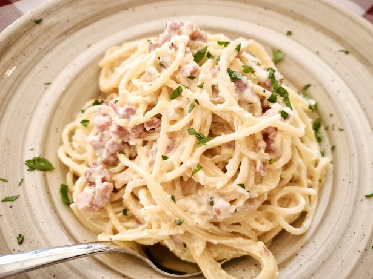

Home
Spaghetti Carbonara

Description
Spaghetti carbonara is a classic Italian pasta dish made with al dente spaghetti tossed in a creamy sauce of eggs, Parmesan or Pecorino cheese, crispy pancetta, and freshly ground black pepper. Though it contains no cream, the combination of warm pasta water, cheese, and eggs creates a smooth, silky texture that coats every strand.
Rich, savory, and comforting, spaghetti carbonara is a simple yet flavorful meal that comes together quickly. It's perfect for a satisfying weeknight dinner or an elegant Italian-inspired meal served with a light salad and crusty bread.
Ingredients
- Spaghetti 12 oz (340 g)
- Pancetta or bacon, diced 6 oz (170 g)
- Large eggs 3
- Pecorino Romano or Parmesan, finely grated 1 cup
- Garlic, minced 2 cloves
- Freshly ground black pepper 1 teaspoon
- Salt For the pasta water
- Reserved pasta water 1-1½ cups
Steps
-
Bring a large pot of salted water to a boil. Cook the spaghetti until al dente, according to the package instructions. Reserve 1½ cups of pasta water, then drain the spaghetti.
-
While the pasta cooks, whisk the eggs, grated cheese, and black pepper together in a bowl until smooth.
-
Cook the diced pancetta or bacon in a large skillet over medium heat until crisp. Add the garlic and sauté for about 30 seconds.
-
Add the hot drained spaghetti to the skillet and toss to coat it in the rendered fat. Remove the skillet from the heat.
-
Quickly pour in the egg and cheese mixture, tossing constantly. Add reserved pasta water a little at a time until the sauce becomes smooth and creamy.
-
Serve immediately with extra grated cheese and freshly ground black pepper.